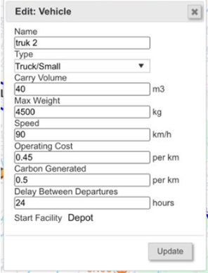
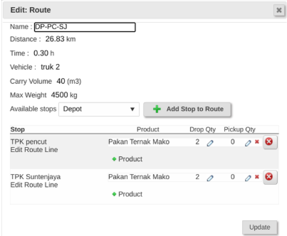
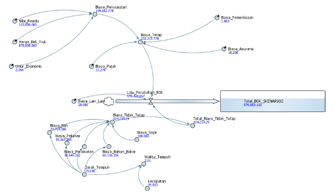

Pemodelan Biaya Operasional Kendaraan (SCM Globe)




Problem
Koperasi Peternak Sapi Bandung Utara menghadapi tantangan dalam merencanakan distribusi pakan ternak konsentrat secara efisien. Ketiadaan model matematis yang terstruktur menyebabkan sulitnya menghitung estimasi Biaya Operasional Kendaraan (BOK) yang mencakup variabel tetap (penyusutan, pajak) maupun tidak tetap (bahan bakar, ban, pelumas) pada setiap opsi rute pengiriman.
Objective
Menganalisis dan membuat model simulasi Biaya Operasional Kendaraan (BOK) guna menemukan rute dan skenario pendistribusian pakan ternak yang paling efisien dari segi biaya. Proyek ini memadukan visualisasi jaringan rantai pasok spasial dengan pemodelan sistem dinamik untuk menguji berbagai alternatif keputusan distribusi.
Tools Highlight
- SCM Globe (Supply Chain Modeling)
- AnyLogic (System Dynamics)
- Microsoft Excel (Data Processing)
- Vehicle Routing Analysis
Peran & Tanggung Jawab
- Data Gathering: Rute, Jarak, Waktu Tempuh
- Cost Analysis: Komponen Biaya Kendaraan
- Simulation: Building Model (AnyLogic)
- Scenario Testing: Efficiency Comparison (SCM)